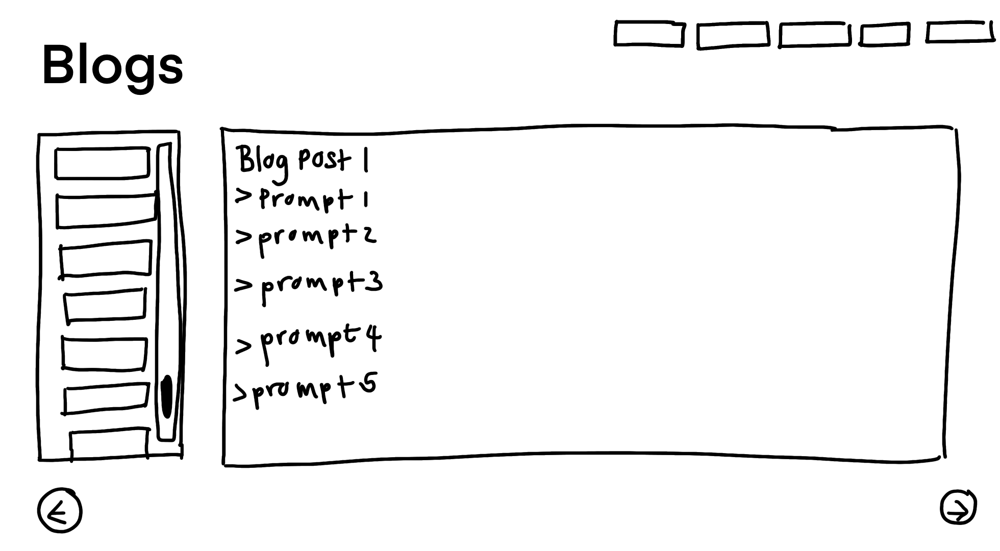
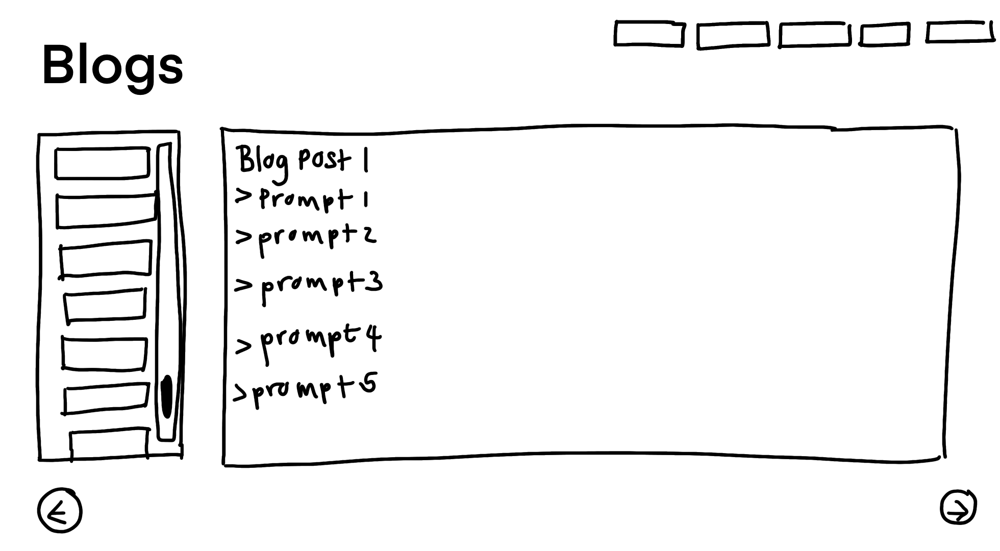
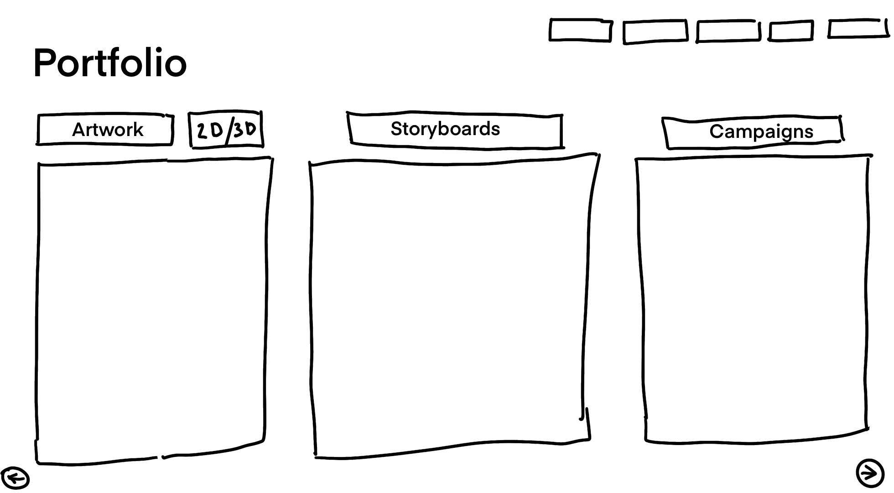
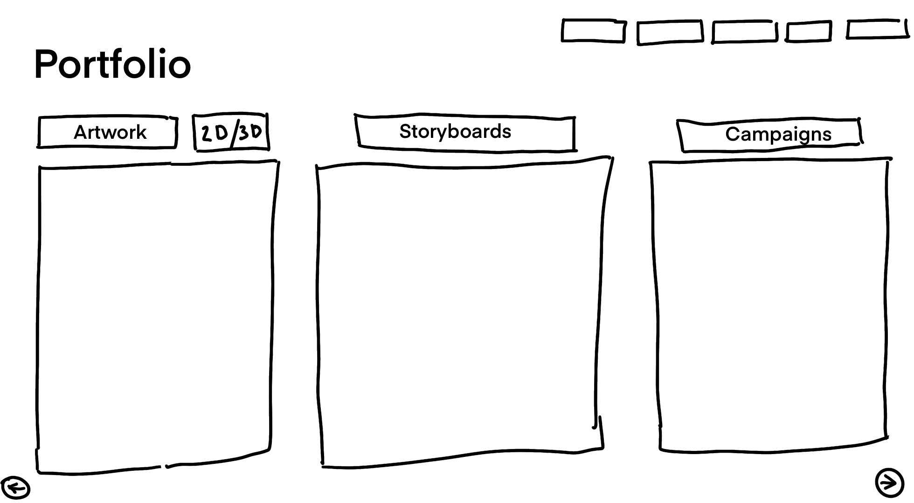
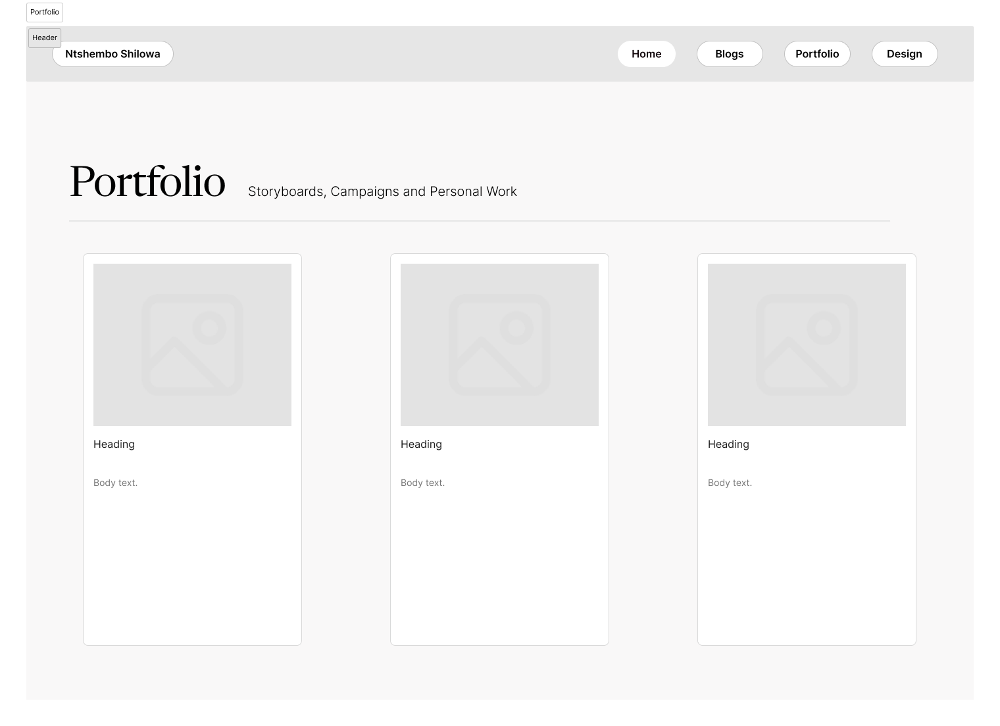
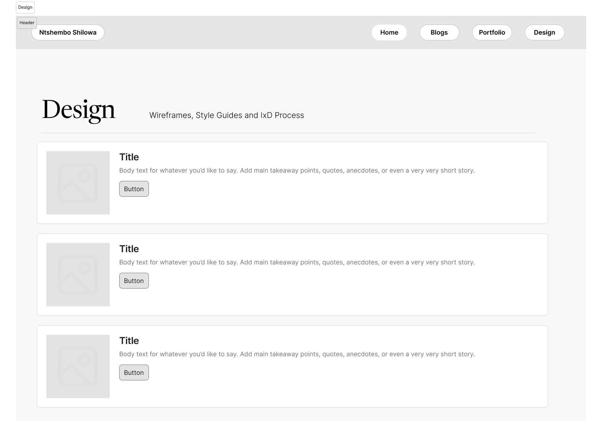
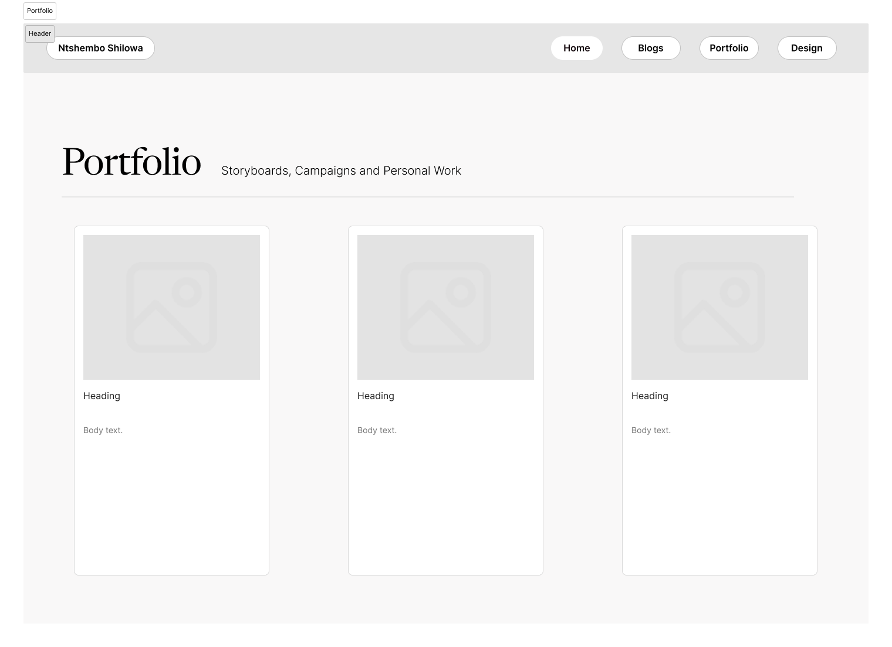
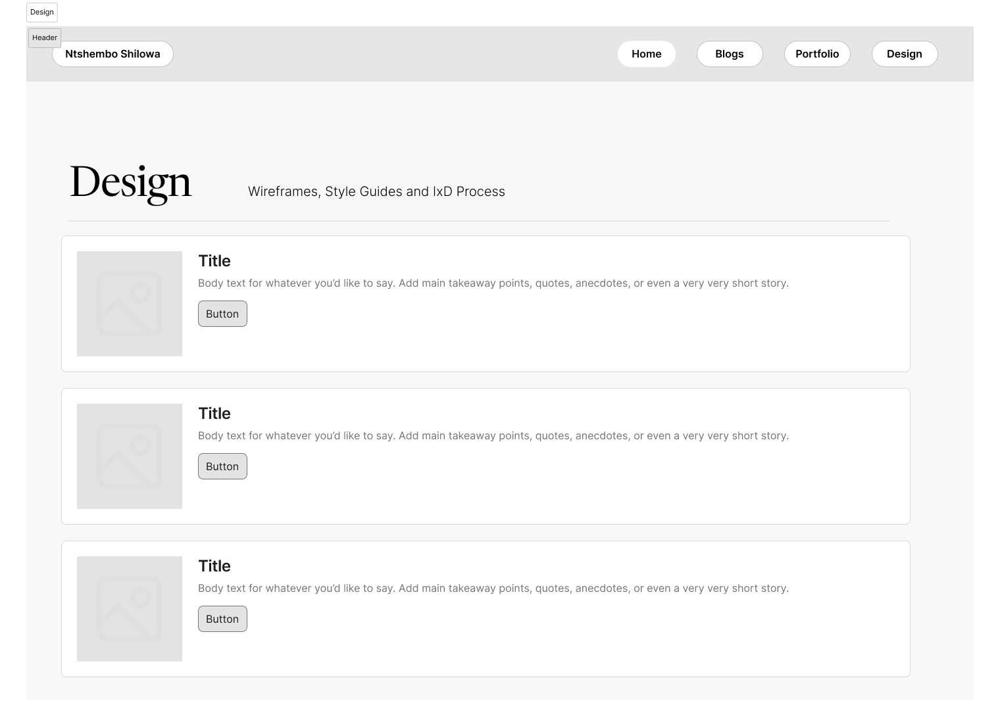

ESSAYS

Introduction
User interface (UI) and user experience (UX) are essential in how people interact with digital platforms. In South Africa, where there are many languages, social differences, and limited access to technology, UI/UX design must consider the local context. This essay critically examines Uber’s UI/UX design in South Africa and explores its ethical strengths and weaknesses. It draws on frameworks by Ghanchi (2021), Shapochka (2025), GeeksforGeeks (2022), and Chivukula et al. (2020). This essay will evaluate topics that mention accessibility, inclusivity, privacy, bias, emergency design, and the ethical role of designers.
Uber’s Global UI and Local Challenges
Uber uses the same UI design around the world. It has a simple layout with features like real-time tracking and one-click ride booking. This global consistency helps users who are already familiar with the app. However, in South Africa, this globalized uniformity introduces challenges of cultural and linguistic inclusivity. The app uses only English, even though South Africa has 11 official languages. This limits access for users who do not speak English well, especially in rural areas (Ghanchi, 2021). In order for UX to be considered ‘good’, it must respond to the user’s environment (Chivukula et al., 2020). Uber’s design does not consider local conditions such as poor internet coverage or low digital literacy. For example, users in low-income areas may not have stable mobile networks, making it hard to use the app. The design assumes users have constant access to data and GPS, which is not always true in South Africa. In another instance, Uber’s South African design lacks context-specific adaptations. For instance, in areas with high crime rates, users often feel unsafe waiting outdoors. Uber has attempted to mitigate this with features like “Share My Trip” and in-app emergency buttons. However, users report inconsistent responses from authorities and drivers when emergencies occur—pointing to a disconnect between UI design and real-world UX outcomes.
Accessibility and Inclusion
Accessibility is a basic part of ethical UX design. Uber’s app has very few features for people with disabilities. There is limited voice support and no clear optimisation for screen readers or haptic feedback. In a country where many people may have physical or educational limitations, notably the elderly, this makes the app harder to use. As Shapochka (2025) explains, ethical UX must “think for the user” in difficult situations. If someone has poor vision or cannot read quickly, they should still be able to use the app easily. Uber’s design shows little effort to support users with different needs. Ghanchi (2021) argues that design must reflect care for all users, not just those who are tech-savvy or wealthy.Privacy and Consent
Uber collects large amounts of user data, such as locations, payment methods, and travel history. Although users agree to this when using the app, the privacy policy is written in complex legal language. This makes it difficult for people with lower education levels to fully understand what they are agreeing to (GeeksforGeeks, 2022). Chivukula et al. (2020) highlight that users must have control over their data. Ethical design should give users clear choices about what information is shared and for how long. Uber’s app in South Africa does not offer enough simple options for changing data settings. As a result, many users may be sharing more than they realise, without fully informed consent.Bias in Algorithmic Design
Uber’s system uses algorithms to decide prices and match riders with drivers. While this helps the service run smoothly, it can also create bias. In South Africa, people living in poorer or mostly Black areas often report longer wait times and higher prices. This could be the result of an algorithm that favours areas with more drivers or higher fares, even if it is not intentional (Ghanchi, 2021). Ethical UX design should include checks to prevent such unfair outcomes. Chivukula et al. (2020) state that designers have a duty to consider how their systems might hurt certain groups. In Uber’s case, not checking the algorithm for bias means the system could continue to disadvantage already-marginalised users.Emergency Features and Crisis Design
South Africa has high crime rates in many cities. This makes safety an important part of ride-hailing apps. Uber includes some safety tools like emergency buttons and live location sharing. However, many users have reported that these features do not always work well. Sometimes emergency services respond slowly, or drivers ignore the alerts (Shapochka, 2025). In a crisis, users may not have time to figure out how to use complex features. Ethical UX should make safety tools easy to find and use under stress. Uber could improve by adding clearer alerts, offline safety options, or automatic help messages. According to Shapochka (2025), ethical crisis design means making the right action the easiest one to take.Dark Patterns and User Manipulation
Uber’s app uses persuasive design techniques to encourage users to choose more expensive ride types, such as Uber Comfort or Uber XL. These options are made more visible, while cheaper ones are less obvious. This is a type of “dark pattern” known as visual manipulation (GeeksforGeeks, 2022). While some level of persuasion is acceptable in design, users should not be tricked into spending more than they want. Chivukula et al. (2020) warn that designers must balance business goals with user rights. Uber’s current design gives users less control by hiding lower-cost options. A more ethical solution would be to show all choices equally and let users set their ride preferences.Usability and Feedback
A key part of ethical UX is giving users feedback during every step of their journey. Uber usually performs well with real-time tracking and driver updates. But during busy times or when there are network issues, the app can stop working or freeze without explanation. This leaves users confused and frustrated (Ghanchi, 2021). Chivukula et al. (2020) argue that ethical design includes respect for the user’s time and mental effort. Uber could improve by adding simple messages like “retry” buttons, progress bars, or support pop-ups. These small features can reduce anxiety and improve trust in the service.Connectivity Issues and Offline Use
South Africa’s internet and mobile networks are not reliable in all areas. Uber’s app needs a live data connection to work, which limits its use in rural or low-income places. There are no options for booking rides through SMS or using offline maps. Shapochka (2025) says that ethical design must work even in weak infrastructure. Uber could offer features like offline booking for recent routes, SMS ride confirmation, or a low-data mode. These changes would make the app more inclusive for users without strong or regular internet access.Cultural Sensitivity and Localisation
Uber’s interface looks the same in every country. It does not reflect South African languages, holidays, or cultural habits. For example, the app does not offer promotions for public holidays or use local phrases. This makes the platform feel distant and foreign. Chivukula et al. (2020) use the term “design citizenship” to explain how apps should reflect local values. A more ethical UI in South Africa would include language options, local events, and regional slang. These features would make users feel seen and respected, not just included as an afterthought.The Designer’s Ethical Role
Behind every app is a team of designers making decisions. These designers must balance company profits with user needs. Chivukula et al. (2020) describe this as “ethical mediation”—finding a middle ground between business goals and doing what is right for users. Uber’s current design shows that business priorities often come first. Many ethical problems—like lack of accessibility, weak privacy controls, and cultural blindness—could be fixed if designers pushed for them. Ghanchi (2021) reminds us that being a good designer means thinking about how design affects people’s lives, especially in vulnerable communities.Conclusion
Uber’s UI/UX in South Africa shows both strengths and ethical weaknesses. The app is functional and easy to use for many people, but it often ignores the needs of users in rural, low-income, or marginalised areas. It lacks accessibility, privacy clarity, emergency support, and cultural sensitivity. These are not just technical problems—they are ethical ones. Using the work of Ghanchi (2021), Shapochka (2025), GeeksforGeeks (2022), and Chivukula et al. (2020), this essay has shown that ethical design means more than just a working interface. It means respecting users' dignity, choices, and safety. Designers must take responsibility for the outcomes of their work. In places like South Africa, where digital access is uneven and the risks are higher, ethical UX is not just important—it is essential.Iteration 1
 

 
 Iteration 2


 



Iteration 1
Iteration 2